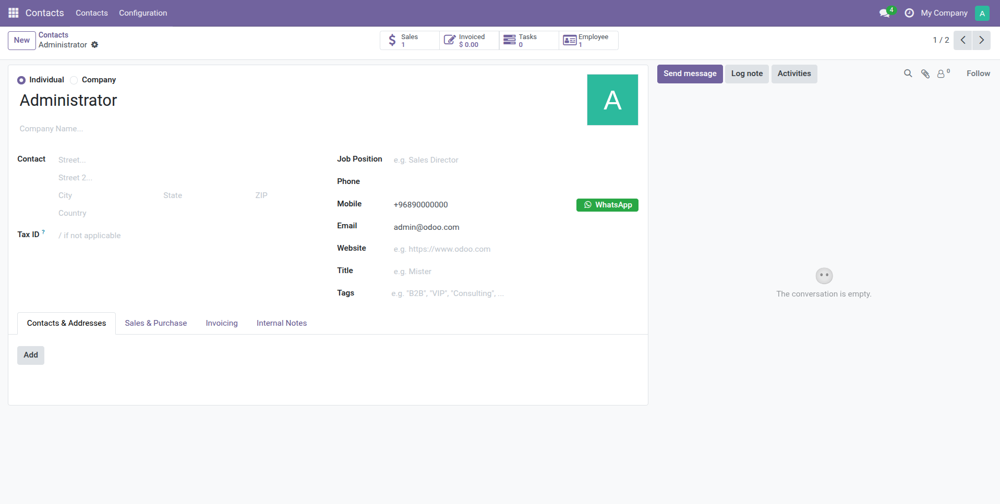
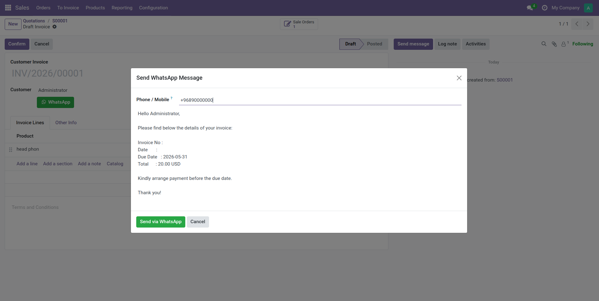
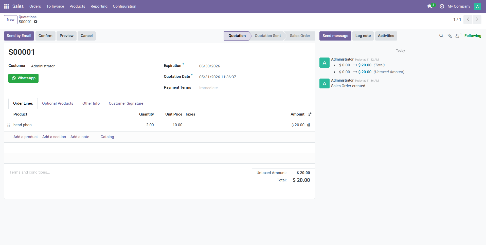

WhatsApp Direct Link adds a green WhatsApp button across your most-used Odoo records. Your team can contact customers instantly from Contacts, Sales Quotations, and Customer Invoices — without leaving Odoo and without copy-pasting phone numbers. A smart wizard pre-fills the message with the relevant document details, ready to send in seconds.
One-click WhatsApp button next to the Mobile field on every contact record. Hidden automatically when no phone number exists.
WhatsApp button on every quotation. Opens a wizard with a pre-filled message including quotation number, date, and total amount.
WhatsApp button on every invoice. Wizard auto-fills invoice number, due date, total, and currency — ready to send with one click.
Manage and customize message templates per document type directly from General Settings. No developer mode needed.
Full Arabic translation included. The interface adapts to your Odoo language settings out of the box.
Uses the free api.whatsapp.com/send deep-link. Works with WhatsApp Web and the mobile app — zero setup.
WhatsApp button next to the Mobile field on a Contact record

Pre-filled message wizard on a Customer Invoice

WhatsApp button on a Sales Quotation

direct-whatsapp folder to your Odoo addons directory.Dependencies: Contacts | Sale Management | Invoicing (Account)